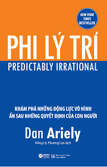

Phi lý trí |
|
|---|---|
|  | Tác giả: Dan Ariely |
| Năm phát hành: 2018 | |
| Thể loại: Tâm lý học và cuộc sống | |
| Độ dài: 404 | |
Nội dụng của cuốn:Mục đích của tác giả khi viết cuốn sách về tâm lý học con người - Phi Lý Trí này là nhằm chứng minh sự thiếu sáng suốt của con người khi đưa ra các quyết định. Đồng thời, khai mở thêm nhiều hiện tượng tâm lý thú vị khác theo một hệ thống. Và Dan Ariely đã hoàn thành điều đó một cách hoàn hảo với nhiều triết lý, lời khuyên thú vị. |
|